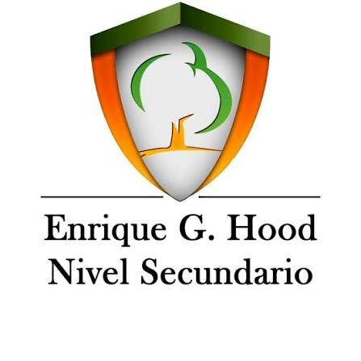

Un trabajo de NTIC hecho por estudiantes
Este sitio es el resultado de una investigación para la materia NTIC (Nuevas Tecnologías de la Información y la Comunicación) de la Escuela Enrique G. Hood, Nivel Secundario.
Escuela Enrique G. Hood
Somos alumnos del Nivel Secundario. En NTIC aprendemos a usar la tecnología para investigar, comunicar y crear. Por eso elegimos un tema que nos toca de cerca: el tiempo que pasamos frente a las pantallas.
Usamos el celular para estudiar, hablar con amigos y entretenernos. Queríamos saber qué dicen los datos y cómo cuidarnos sin dejar de aprovechar lo bueno de la tecnología.

Qué nos propusimos
Objetivo
Informar a la comunidad escolar sobre el uso excesivo de pantallas con datos confiables y lenguaje claro.
Cómo investigamos
Consultamos informes de Common Sense Media, la Organización Mundial de la Salud y una investigación publicada en The Lancet Child & Adolescent Health.
Qué hicimos
Organizamos la información en este sitio web, con estadísticas, efectos, recomendaciones y las fuentes para verificar cada dato.
Las pantallas no son buenas ni malas por sí mismas. Sus efectos dependen del contenido, del contexto y del tiempo que les dedicamos. La meta es el equilibrio.